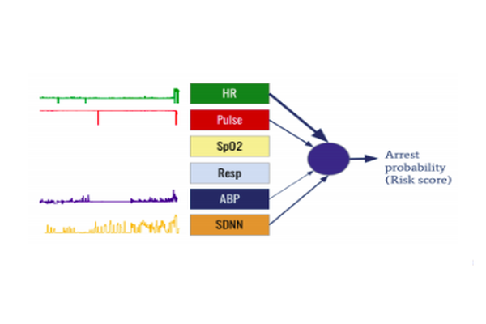

Cardiac Arrest Prediction

Cardiac arrest is a rare but devastating event in critically ill children associated with death, disability and significant healthcare costs. When a cardiac arrest occurs, the limited interventions available to save patient lives are associated with poor patient outcomes. The most effective way of improving patient outcomes and decreasing the associated healthcare costs would be to prevent cardiac arrest from occurring. This observation highlights the importance of prediction models that consistently identify high risk individuals and assist health care providers in providing targeted care to the right patient at the right time. In this paper, we took advantage of the power of convolutional neural networks (CNN) to extract information from high resolution temporal data, and combine this with a recurrent network (LSTM) to model time dependencies that exist in these temporal signals. We trained this CNN+LSTM model on high-frequency physiological measurements that are recorded in the ICU to facilitate early detection of a potential cardiac arrest at the level of the individual patient. Our model results in an F1 value of .61 to .83 across six different physiological signals, the most predictive single signal being the heart rate. To address the issue of instances of missing data in the recorded physiological signals, we have also implemented an ensemble model that combines predictors for the signals that were collected for a given patient. The ensemble achieves .83 average F1 score on a held-out test set, on par with the best performing signal, even in the absence of a number of signals. The results of our model are clinically relevant. We intend to explore implementation of this model at the point of care as a means of providing precise, personalized, predictive care to an at-risk cohort of patients.